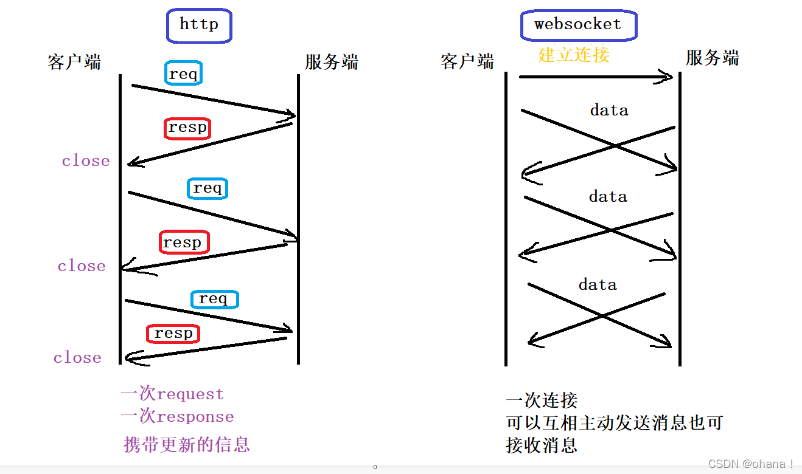

Echo Test
WebSocket原理 - ohana！- csdn
1. 什么是websocket
websocket是h5的一种新协议，基于tcp的持久化协议；
2. websocket vs http
 相同点：
相同点：
- 都是基于tcp的，都是可靠性传输协议
- 都是应用层协议
不同点：
- WebSocket是双向通信协议, http是单向的
WebSocket在建立握手时，数据是通过HTTP传输的。
但是建立之后，在真正传输时候是不需要HTTP协议的
建立过程：
1. 客户端发起http请求，经过3次握手，建立TCP连接；
2. 服务器收到客户端握手请求后，同样采用http协议回馈数据
3. 客户端收到连接成功信息后，开始借助于TCP传输信道进行全双工通信
3. 发展历史
3.1 http存在的问题
需要客户端主动发，服务端被动发，也就是一次请求，一次响应，不能实现主动发送
3.2 long poll(长轮询)
客户端发起长轮询，如果服务端的数据没有发生变更，会hold住请求，
直到服务端的数据发生变化，或者等待一定时间超时才会返回。
返回后，客户端又会立即再次发起下一次长轮询
优点：
解决了http不能实时更新的弊端
缺点：
服务端压力。长轮询的间隔期一般很长，
例如 30s、60s，并且服务端hold住连接不会消耗太多服务端资源。
3.3 Ajax轮询
假装实时了，也有缺点：
1. 还是会延迟
2. 服务端压力，频繁轮询；
3.4 websocket改进
真长连接，一种不同于http的新协议；
http方式建立连接后，后续数据都以帧序列的形式传输
